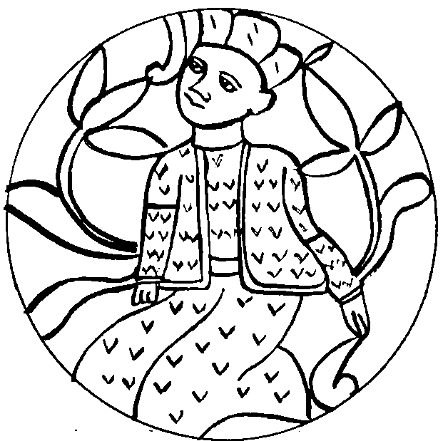

İÇİNDEKİLER

Birinci Bölüm İstanbul, 1992 9
II. Uno-Mastik'te Bir Aşk Günü 15
III. Villa Argun’da Doğum Günü 25
İkinci Bölüm Encyclopaedia Unomastica 42
VIII. Hoş Geldin Ya Atik Yomin 72
Üçüncü Bölüm Selenge Boyları, 950 79
XIII. Αzman’ın Azaldığıdır 102
Dördüncü Bölüm Tengere Tardu Tigin’in Sarkel’e Vardığıdır 116
XVI. Sarkel’in Kapısında, Dede'nin Otağında 124
Beşinci Bölüm Güç Kulesi, 964 143
XVIII. Tengere'nin Penceresi 143
XX. Selcük'ün Yalancı Töre'si 157
Altıncı Bölüm Tengere'nin Kağan Olduğudur 174
XXV. Tengere Yuvarlanmış, Kapağını Bulmuş 207
Yedinci Bölüm Cend Ufukları 211
XXVII. Tengere, Kazan'a Karşı 218
XXVIII. Tengere Delirdi mi? 226
XXIX. Başravın Kadı da Olduğudur 231
XXX. Çaşıtların Döndüğüdür 239
Sekizinci Bölüm Tengere'nin Cendereden Kurtulduğudur 243
XXXI. Cend'de Boş Kış Konuşmaları 243
XXXII. Tengere'nin Müslüman Olduğudur 249
XXXIII. Tengere'nin Yokluğa At Teptiğidir 254
Dokuzuncu Bölüm Aldı Selcük 258
Onuncu Bölüm Can Aldı Tankut 274
On birinci Bölüm Avcılar’dan Bulgaristan'a Kaçış 298
XXXVIII. Çitilemeden, Durulamadan 298
XXXIX. Avcıların Avcısı Avcılar'da 306
XL. Macaristan'daki Rodop Dağları 310
XLI. Televizyonsuz Ev Mezara Benzer 315
On İkinci Bölüm Taş Taş Üstünde Bilenir… 320
XLIII. Altın Çağ'ın Ertelenişi 328